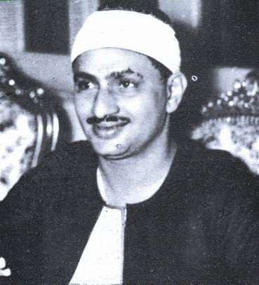
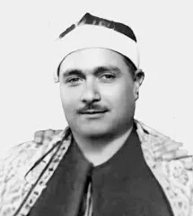

Ecouter du Coran en ligne
Cliquer sur le recitateur qui vous plait :
Abdul Basit Abdul Samad
Mahmoud Khalil Al-Husary

Mohamed Siddiq Al-Minshawi

Mustafa Ismail
Abdur-Rahman As-Sudais
Saud Al-Shuraim
Mahmoud Ali Al-Banna
Maher Al-Muaiqly
Yasser Al-Dosari
Ali Al-Hudhaify
Abdullah Awad Al-Juhany
Bandar Baleela
Mishary Rashid Alafasy
Saad Al-Ghamdi
Ahmed Al-Ajmi
Fares Abbad
Nasser Al-Qatami
Abu Bakr Al-Shatri
Idris Abkar
Omar Al-Kazabri